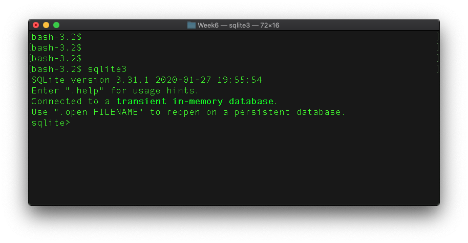
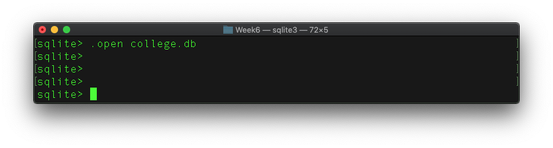

Code
%load_ext sqlThis activity was recovered from sql/sqlite.ipynb. Its code is preserved but is not executed during the public book build, so readers can inspect it without requiring legacy package versions. Download the source notebook to run and modernize it interactively.
SQL: structured query language for relational databases
sqlite3Here is the interface on the Mac terminal / command line:

Enter .help (a dot command) on SQLite prompt will list all supported commands.
sqlite> .help%load_ext sqlcollege.dbSuppose we are to manage the following data in a college: 1. Degree programs with ID, program name, and description 2. Students in the programs, with: ID, name, program information, and class year.
%sql sqlite:///college.dbLet’s open – create if it does not exist – a database file called college.db:
sqlite> .open college.dbScreenshot on Mac terminal:

We can now create the two tables using SQL statements with the SQLite3 interactive.
Please note that %%sql symbols, for example:
%%sql
select * from my_table;in this tutorial is for SQL magic in the Jupyter Notebook and should be excluded from your actual SQL statement.
programs tableCreate the programs table structure:
%%sql
drop table if exists programs;
create table programs (
program_id varchar(10) not null primary key,
program_name varchar(20),
program_desc varchar(500)
);Now add (insert) program data:
%%sql
insert into programs (program_id, program_name, program_desc)
values ('IS', "Information Systems", "Information systems with a business angle");
insert into programs values ('DS', "Data Science", "New data science program");
insert into programs values
('CS', "Computer Science", "Traditional computer science"),
('CST', "Computing & Security Technology", "CST with a new focus on security");Now let’s take a look at data in the table:
%%sql
select * from programs;students tableCreate the students table:
%%sql
drop table if exists students;
create table students (
student_id integer primary key,
student_name varchar(100),
program_id varchar(10),
class_year int
);For the students tables, we have preppared a csv file with students records, which can be downloaded from: students.csv.
Suppose data file students.csv is in the same directory as the college.db:
1 John Smith, IS, 2020
2 Albert Einstein, DS 2021
3 George Washington, CS, 2019
4 Donald Trump, CST, 2020
5 Barack Obama, IS, 2021
. ... .. ....You can use the following dot commands to import the CSV data:
sqlite> .mode csv
sqlite> .import students.csv studentsNow check out the data:
%%sql
select * from students limit 5;%%sql
select count(*) from students;Now that we have the data, we can go ahead to search the data and run statistics.
For example, if you are interested in students in the DS program:
%%sql
select * from students where program_id='DS';Or, you would like to know who have graduated before 2019:
%%sql
select * from students where class_year<2019;Perhaps, you only want to know statistics in each program:
%%sql
select program_id,
count(*) as student_count,
min(class_year) as first_class,
max(class_year) as last_class
from students
group by program_id
order by student_count DESC;Now that you see from the statistics some data values are unrealistic such as a class year \(>2030\). Perhaps we can reset all these values to \(2030\) if they are greater than that:
%%sql
update students set class_year = 2030 where class_year > 2030;We can run the statistics again to see if data have been updated:
%%sql
select program_id,
count(*) as student_count,
min(class_year) as first_class,
max(class_year) as last_class
from students
group by program_id
order by student_count DESC;Suppose you want to retrieve student data with their corresponding program information (e.g. program name):
%%sql
select student_name, program_name, class_year
from students s join programs p on s.program_id = p.program_id
limit 10;We can rerun the previous statistics based on the program names, instead of program IDs:
%%sql
select program_name,
count(*) as student_count,
min(class_year) as first_class,
max(class_year) as last_class
from students s join programs p on s.program_id = p.program_id
group by program_name
order by student_count DESC;This is not the most efficient method to join and run the group by clause. But for now, it is good for the small dataset here.